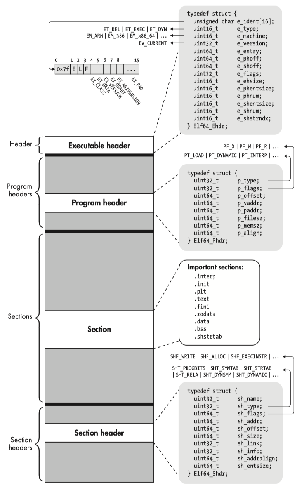

ELF layout
The Executable and Linkable Format (ELF), is a common standard file format for executable files, object code, shared libraries, and core dumps.
Executable and Linkable Format - ELF - OSDev Wiki
- Linux Foundation Referenced Specifications - TIS - ELF: v1.1, v1.2
- Ubuntu Manpage: elf - format of Executable and Linking Format (ELF) files
- sysvabi64 - System V ABI for the Arm® 64-bit Architecture (AArch64)
- aaelf64 - ELF for the Arm® 64-bit Architecture (AArch64)
In computing, the Executable and Linkable Format (ELF, formerly named Extensible Linking Format), is a common standard file format for executable files, object code, shared libraries, and core dumps. First published in the specification for the application binary interface (ABI) of the Unix operating system version named System V Release 4 (SVR4), and later in the Tool Interface Standard, it was quickly accepted among different vendors of Unix systems. In 1999, it was chosen as the standard binary file format for Unix and Unix-like systems on x86 processors by the 86open project.
layout#
Each ELF file is made up of one ELF header, followed by file data. The data can include:
Program header table, describing zero or more memory segmentsSection header table, describing zero or more sectionsDatareferred to by entries in the program header table or section header table

An ELF file has two views: the program header shows the segments used at run time, whereas the section header lists the set of sections.


The segments contain information that is needed for run time execution of the file, while sections contain important data for linking and relocation. Any byte in the entire file can be owned by one section at most, and orphan bytes can occur which are unowned by any section.
- File header:
file $ELF;objdump -f $ELF;readelf -h $ELF. - Program header:
readelf -lW $ELF - Section header:
readelf -SW $ELF;objdump -hw $ELF

ELF header#
/usr/include/elf.h
/* Type of addresses. */
typedef uint32_t Elf32_Addr;
typedef uint64_t Elf64_Addr;
/* Type of file offsets. */
typedef uint32_t Elf32_Off;
typedef uint64_t Elf64_Off;
/* The ELF file header. This appears at the start of every ELF file. */
#define EI_NIDENT (16)
typedef struct
{
unsigned char e_ident[EI_NIDENT]; /* Magic number and other info */
Elf32_Half e_type; /* Object file type */
Elf32_Half e_machine; /* Architecture */
Elf32_Word e_version; /* Object file version */
Elf32_Addr e_entry; /* Entry point virtual address */
Elf32_Off e_phoff; /* Program header table file offset */
Elf32_Off e_shoff; /* Section header table file offset */
Elf32_Word e_flags; /* Processor-specific flags */
Elf32_Half e_ehsize; /* ELF header size in bytes */
Elf32_Half e_phentsize; /* Program header table entry size */
Elf32_Half e_phnum; /* Program header table entry count */
Elf32_Half e_shentsize; /* Section header table entry size */
Elf32_Half e_shnum; /* Section header table entry count */
Elf32_Half e_shstrndx; /* Section header string table index */
} Elf32_Ehdr;
typedef struct
{
unsigned char e_ident[EI_NIDENT]; /* Magic number and other info */
Elf64_Half e_type; /* Object file type */
Elf64_Half e_machine; /* Architecture */
Elf64_Word e_version; /* Object file version */
Elf64_Addr e_entry; /* Entry point virtual address */
Elf64_Off e_phoff; /* Program header table file offset */
Elf64_Off e_shoff; /* Section header table file offset */
Elf64_Word e_flags; /* Processor-specific flags */
Elf64_Half e_ehsize; /* ELF header size in bytes */
Elf64_Half e_phentsize; /* Program header table entry size */
Elf64_Half e_phnum; /* Program header table entry count */
Elf64_Half e_shentsize; /* Section header table entry size */
Elf64_Half e_shnum; /* Section header table entry count */
Elf64_Half e_shstrndx; /* Section header string table index */
} Elf64_Ehdr;
The initial 16 bytes correspond to the e_ident member, which means "ELF Identification".
It markes the file as an object file and provide machine-independent data with which to decode and interpret the file's contents.
hexdump:
hd -n 16 $ELF
| Name | Value | Purpose |
|---|---|---|
| EI_MAGO | 0 | File identification byte 0 index |
| EI_MAG1 | 1 | File identification byte 1 index |
| EI_MAG2 | 2 | File identification byte 2 index |
| EI_MAG3 | 3 | File identification byte 3 index |
| EI_CLASS | 4 | File class byte index |
| EI_DATA | 5 | Data encoding byte index |
| EI_VERSION | 6 | File version byte index |
| EI_OSABI | 7 | OS ABI identification |
| EI_ABIVERSION | 8 | ABI version |
| EI_PAD | 9 | Byte index of padding bytes |
A file's first 4 bytes hold a "magic number," identifying the file as an ELF object file.
| Name | Value | Position |
|---|---|---|
| ELFMAGO | 0x7f | e_ident[EI_MAG0] |
| ELFMAG1 | 'E' | e_ident[EI_MAG1] |
| ELFMAG2 | 'I' | e_ident[EI_MAG2] |
| ELFMAG3 | 'F' | e_ident[EI_MAG3] |
The next byte, e_ident[EI_CLASS], identifies the file's class, or capacity.
| Name | Value | Meaning |
|---|---|---|
| ELFCLASSNONE | 0 | Invalid class |
| ELFCLASS32 | 1 | 32-b it objects |
| ELFCLASS64 | 2 | 64-b it objects |
Byte e_ident[EI_DATA] specifies the data encoding of the processor-specific data in the object file. The following encodings are currently defined.
| Name | Value | Meaning |
|---|---|---|
| ELFDATANONE | 0 | Invalid data encoding |
| ELFDATA2LSB | 1 | 2's complement, little endian |
| ELFDATA2MSB | 2 | 2's complement, big endian |
e_type identifies the object file type.
hexdump -s 16 -n 2 -e '"%07.7_ax " /2 "%04x " "\n"' $ELF
| Name | Value | Meaning |
|---|---|---|
| ET_NONE | 0 | No file type |
| ET_REL | 1 | Relocatable file |
| ET_EXEC | 2 | Executable file |
| ET_DYN | 3 | Shared object file |
| ET_CORE | 4 | Core file |
e_machine specifies the required architecture for an individual file.
hexdump -s 18 -n 2 -e '"%07.7_ax " /2 "%04x " "\n"' $ELF
| Name | Value | Meaning |
|---|---|---|
| EM_NONE | 0 | No machine |
| EM_SPARC | 2 | SUN SPARC |
| EM_386 | 3 | Intel 80386 |
| EM_68K | 4 | Motorola m68k family |
| EM_88K | 5 | Motorola m88k family |
| EM_MIPS | 8 | MIPS R3000 big-endian |
| EM_MIPS_RS3_LE | 10 | MIPS R3000 little-endian |
| EM_ARM | 40 | ARM |
| EM_X86_64 | 62 | AMD x86-64 architecture |
| EM_AARCH64 | 183 | ARM AARCH64 |
| EM_RISCV | 243 | RISC-V |
To view, dump, analyse or manipulate the object file and ELF file, you need GNU binutils such as readelf, objdump, strip, objcopy, libbfd, etc.
section header#
TIS - ELF v1.2 | Book I: ELF - 1. Object Files - Sections
An object file's section header table lets one locate all the file's sections.
refer to struct
Elf32_Shdr/Elf64_Shdrandsh_type(Section Types) defined in /usr/include/elf.h.
Sections contain all information in an object file, except the ELF header, the program header table, and the section header table. Moreover, object files' sections satisfy several conditions.
- Every section in an object file has exactly one section header describing it. Section headers may exist that do not have a section.
- Each section occupies one contiguous (possibly empty) sequence of bytes within a file.
- Sections in a file may not overlap. No byte in a file resides in more than one section.
- An object file may have inactive space. The various headers and the sections might not "cover" every byte in an object file. The contents of the inactive data are unspecified.
Please refer to the following materials for further details.
- aaelf64 | 5 Object Files - 5.3 Sections
- ELF Format Cheatsheet | Sections
- 《ARM64体系结构编程与实践》 | 第 8 章 GNU 汇编器 - 8.1 编译流程与 ELF 文件
- Learning Linux Binary Analysis | Chapter 2: The ELF Binary Format - ELF section headers
- Practical Binary Analysis | Chapter 2: The ELF Format - 2.3 Sections
- Arm Assembly Internals and Reverse Engineering | Chapter 2 ELF File Format Internals - ELF Section Headers
- Computer Systems - A Programmer’s Perspective | Chapter 7: Linking - 7.3: Object Files ; 7.8: Executable Object Files
program header#
TODO: TBD with elf-specs.
references#
ELF-32 vs. ELF-64
HP - ELF-64 Object File Format v1.4
uClibc - ELF-64 Object File Format v1.5
MIPS - 64-bit ELF Object File Spec v2.5
The ELF format
ELF 文件 - CTF Wiki
ELF Format Cheatsheet